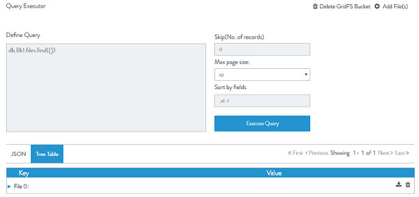

| Functionality | Description |
|---|---|
| Define Query | Add selectors/conditions in the query box to filter your results. |
| Skip(No. of records) | This field allows you to skip the specified number of documents from start. |
| Max page size | You can update max page size as 25 or 50 to view more documents per page. |
| sort by fields | Provide a value in the Sort by fields box as shown. |
| delete a file | Click the delete icon�in the Tree Table view or alternatively click Delete in JSON view. |